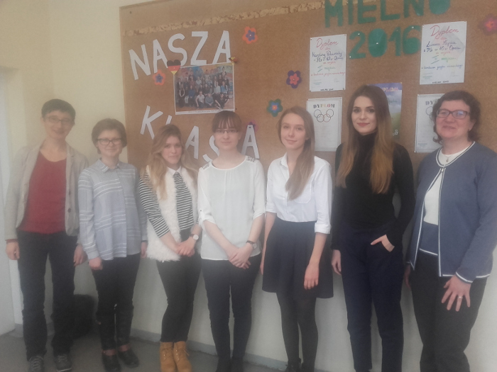

Gazeta ZSO nr II w Opolu
Numer 2/2016
DSD - egzamin dla zaawansowanych
 Po raz kolejny w naszej szkole odbył się egzamin z języka niemieckiego Deutsches Sprachdiplom II, poziom B2/C1. W dniach 30.11. – 05.12.2016r. przystąpiło do niego 33 uczniów z klas trzecich Od lat można zauważyć duże zainteresowanie egzaminem, nie tylko uczniów klas dwujęzycznych. Jednym z głównych powodów, dla których uczniowie przystępują do egzaminu jest możliwość podjęcia nauki na uczelniach wyższych w Niemczech bez obowiązku zdawania egzaminu językowego. Posiadając certyfikat DSD II poziom C1 można również nauczać w języku niemieckim. Inne powody dla których uczniowie decydują się na podjęcie tego wysiłku to wg ich wypowiedzi: wyższe kwalifikacje w pracy zawodowej, możliwość sprawdzenia swoich kompetencji językowych, chęć posiadania dokumentu ratyfikowanego przez Europejski System Opisu Kształcenia Językowego świadczący o poziomie umiejętności językowych. Przygotowania do egzaminu trwają przez trzy lata nauki w naszym liceum. Uczniowie przygotowywani są przez swoich nauczycieli języka niemieckiego, a całość koordynuje pani Grit Gamlin, nauczycielka i pracownik Centrali Szkolnictwa Zagranicznego (ZfA) oddelegowana przez rząd niemiecki do pracy w ZSO NR II w Opolu. Nasza szkoła jest jedyną szkołą w Opolu przygotowującą do egzaminu DSD II. Egzamin składa się z części pisemnej i ustnej. Cześć pisemna obejmuje nie tylko rozumienie tekstu słuchanego i pisanego ale również trudną umiejętność pisania rozprawki w oparciu o tekst źródłowy i statystykę. W tym roku uczniowie musieli odpowiedzieć na pytanie czy samochody z napędem elektrycznym są przyszłością motoryzacji. Część ustna zaś składa się z prezentacji, którą uczeń wcześniej sam przygotował na wybrany przez siebie temat oraz rozmowy na podstawie wylosowanego materiału. Tematami tegorocznych prezentacji były między innymi: żywność z upraw ekologicznych czy produkty GMO, czy klonowanie powinno zostać zalegalizowane, czy powinno się przyjąć uchodźców, czy dziewczęta kultury i religii muzułmańskiej powinny nosić podczas lekcji W-F hidżab. Zarówno w części pisemnej jak i ustnej niezmiernie ważną rolę odgrywają treść, zakres środków leksykalnych oraz poprawność gramatyczna. Uczeń musi wykazać się również pewnego rodzaju spontanicznością, interakcją i płynną argumentacją, co sprawia wielu uczniom trudności nawet w języku ojczystym. Prace pisemne są wysyłane do Kolonii i sprawdzane przez Centralną Komisję DSD. Uroczyste wręczenie certyfikatów języka niemieckiego organizowane jest corocznie w kwietniu przez różne szkoły realizujące program DSD na Opolszczyźnie.
ul. Pułaskiego 3
45-048 Opole
tel. 077 45 422 86
fax 077 02 18 87
e-mail:
bez.tytulu@o2.pl
Ola Orłowska
DTP
Michał Woś
Opiekun
mgr Lucyna Rudnik
Ola Orłowska, Ania Cichy, Dagmara Cioska, Julia Nowicka, Julia Marcinów, Hania Szarzewicz, Michał Woś, Bartek Lipnicki, Jonasz Mularz, Paweł Kubacki, Mateusz Pietruszyński, Mateusz Orlik